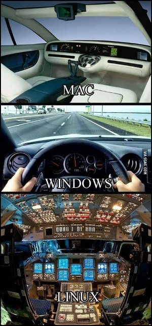
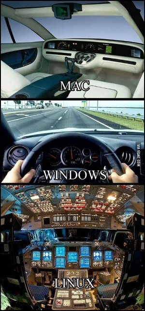

Протрите призму восприятия, это расширит кругозор
 

Не так давно в MacOS X с одним из обновлений приехала тёмная тема оформления. Ну тема и тема - подумалось мне - что ж в этом такого удивительного? Под тот же линукс тем оформления окон а-ля MacOS X, только в тёмном варианте вагон и маленькая тележка уже много лет, под винду думаю, тоже можно найти, если поискать. Ан нет, на некоторых форумах, в социальных сетях и на ютубе периодически встречаю посты пользователей MacOS, просто пропитанные восхищением этой тёмной темой. Похоже, тысячи людей неудержимо писают кипятком в связи с этим и я никак не мог понять, почему. В одном из постов я обнаружил фразу следующего вида: "это то, чего мы все так долго ждали". Как-то не соответствует такая бурная реакция значимости события, вы не находите? И с того самого момента мне казалось, что что-то мне эта ситуация напоминает, но я не мог вспомнить, что именно. Сегодня внезапно вспомнил. Цитата с башорга:
- Мне так нравится 10ка, там такая офигенная фича, можно делать виртуальные рабочие столы и на одном держать одни приложения, на другом другие, когда твой говнолинукс так сможет?
- М... Ну лет двадцать назад, где-то.
Вот, с восторгами о тёмной теме в MacOS примерно как-то так же. Ещё в этот список можно отнести например, магазин приложений в Win10, установку убунты в окружение Win (проекту WinE, использующемуся для симметричных целей в линуксе уже чёрт знает сколько лет). Думаю, если покопаться, то можно найти и ещё примеры. И каждый раз, когда какая-то привычная для тебя вещь приходит на другую платформу, подаётся это всё с такой помпой, будто её заново для этого изобрели. По крайней мере пользователи воспринимают это именно так и свято в это верят. Примерно как Американцы в исключительность своей нации - изнутри может быть оно так и выглядит, но снаружи это смешно. Почему-то по умолчанию человек считает операционную систему, которой он пользуется - лучшей. Не лучшей для него конкретно, а просто лучшей в принципе. Люди живут в рамках одной платформы, как в домике. Зачем пробовать что-то иное, если ты уже пользуешься лучшим из того, что изобрело человечество? Откуда и из каких углов сознания появляется это мнение об исключительности того, чем ты пользуешься? На что ещё оно распространяется при таком подходе? Где здоровое любопытство из разряда "а что там, за углом"? Гугл изобрёл андроид (привет тебе, Энди Рубин), Apple изобрела MaxOS (привет всем BSD системам), а дядя Гейтс изобрёл интерфейс Windows (привет фирме Xerox). Почему меня это всё так раздражает? Не знаю, наверное, по той же причине, по которой меня раздражают грамматические ошибки - не люблю невежество. В то же самое время я отдаю себе отчёт в том, что я во множестве других сфер такой же, если не бОльший невежда и наверное, кого-то это тоже очень раздражает. А возможно и то, что я излагаю сейчас, будет раздражать меня в будущем примитивностью формы и содержания - вполне вероятно.
Скажу честно - я не являюсь фанатом Apple, того, что она производит и MacOS в частности, так же как не являюсь фанатом Windows и, внезапно, фанатом Linux я себя тоже не считаю. Я вообще не люблю фанатизм в любом его проявлении. Linux я считаю инструментом, с которым мне удобно работать, инструментом, который я люблю, но это отнюдь не фанатизм, я этот этап прошёл. Когда я был моложе лет на 10 (слышите шорох? это из меня песок сыпется на этой фразе), я готов был нести linux в массы, помогать каждому, кто выказывал к этому хоть малую толику интереса, сейчас я просто молчу и устраняюсь. Всё стало намного легче, проще и доступнее. Гугл, например, дистрибутивы, форумы.

Каждый инструмент должен решать какую-то свою задачу или ряд задач. В windows и mac хороша их простота, их низкий порог вхождения, в linux - кастомизируемость и стабильность. Может быть оно и так, но зачем операционная система нужна в принципе? По большому счёту это некое окружение, необходимое для запуска программ, с которыми вы работаете. Вы не работаете с операционной системой, вы работаете с вордом, фотошопом, браузером и так далее. Если вам нет нужды пользоваться чем-то кроме менеджера окон и ваших приложений, то при условии их наличия на этой операционной системе, в принципе разница для вас в операционных системах будет стремиться к нулю и отличаться несущественными внешними факторами вроде тёмной темы оформления окон. Моя мама впадает в ступор, если иконка на рабочем столе меняет своё положение, мама боится всего, любых изменений. Живёт на линуксе уже лет 6 или 7, точно не помню и уже не помню, когда в последний раз она меня просила о помощи в том, что касается её ноутбука. Думаю, с тем же успехом она могла бы пользоваться маком, а зачастую и вовсе предпочитает планшет на андроиде. Откуда появляются все религиозные войны формата Android/iOS? Почему кто-то пытается с пеной у рта убедить противоположную сторону, что его выбор лучше? Почему всем не плевать? И ведь такие войны идут постоянно. Помню, лет 20 тому назад (пока я писал эту фразу, из меня высыпалось ещё немного песка) был анекдот:
- Netscape лучше, чем Explorer!
- Чем лучше?
- Чем Explorer!!!
Меняется только почва для баталий, суть остаётся та же - "Чем Explorer!".
Теги: linux, windows, macos, мысли-вслух